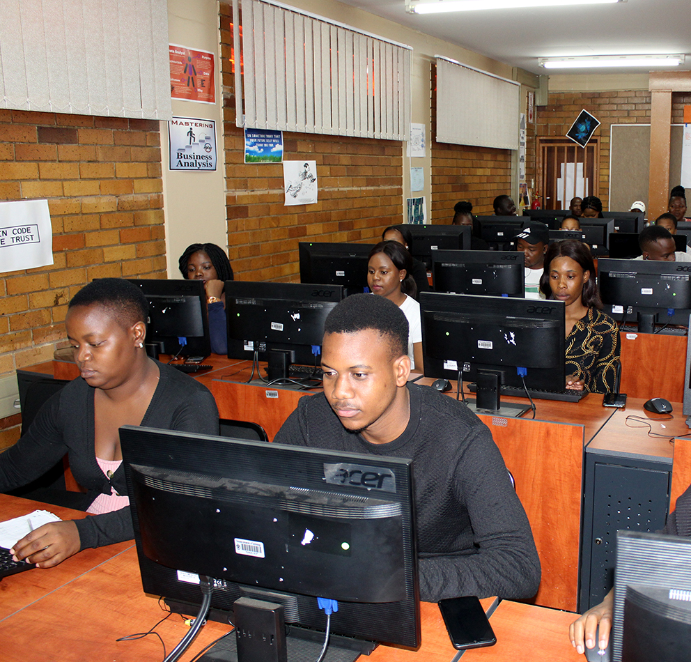

<!-- ======= About Section ======= -->
<section id="about" class="about section-bg">
    <div class="container" data-aos="fade-up">

      <div class="section-title">
        <h2>About</h2>
        <h3>  <span> More about us</span></h3>
        <p></p>
      </div>
      
      <div class="row">
        <div class="col-lg-6" data-aos="zoom-out" data-aos-delay="100">
          
        </div>
        <div class="col-lg-6 pt-4 pt-lg-0 content d-flex flex-column justify-content-center" data-aos="fade-up" data-aos-delay="100">
          <h3>Informatics Community Engagement Project.</h3>
      
          <ul>
            <li>
              <i class="fas fa-campground"></i>
              <div>
                <p> ICEP is a community engagement programme initiated by the informatics department of TUT. initial was engendered
                  to, amongst other objectives, assist students,who’ve completed all of their theoretical modules, obtain an
                  internship. The internship exposes said students toindustry experiences and operations.</p>
              </div>
            </li>
            <li>
              <i class="fas fa-chalkboard-teacher"></i>
              <div>
                <p>There, they are both educated apropos of the latest in industry technologies, tools, methodologies, frameworks,
                  and systems; but also,in the internalisation and application of technical, interpersonal, and conceptual
                  knowledge.</p>
              </div>
            </li>
          </ul>
          <p>
             <button type="button" class="btn btn-outline-danger" routerLink="/about-page">Click here to learn more</button>
          </p>
        </div>
      </div>

    </div>
